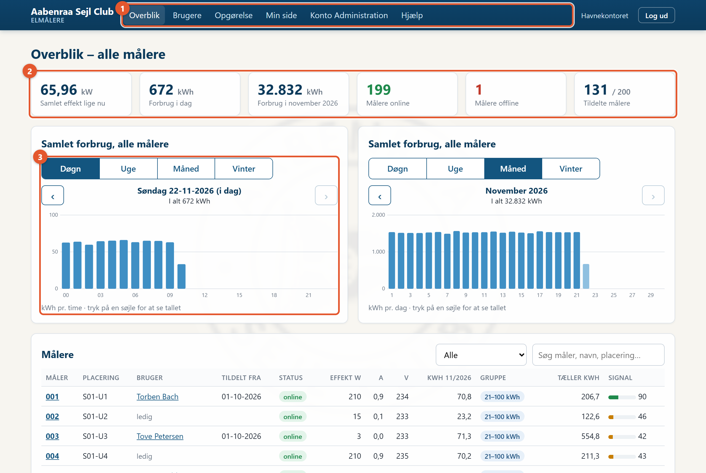
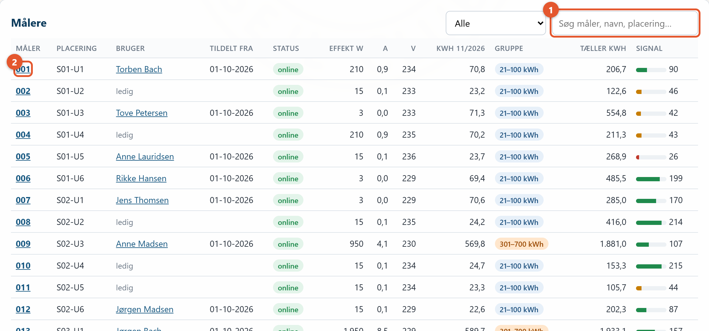
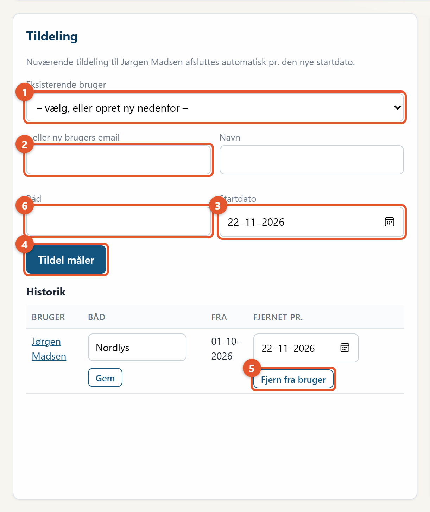
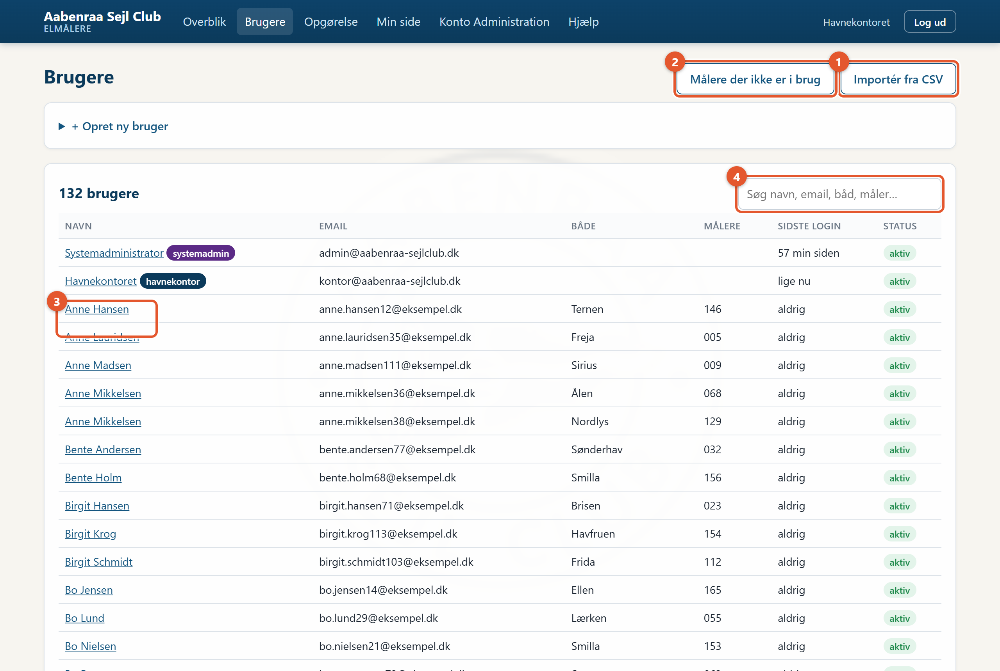
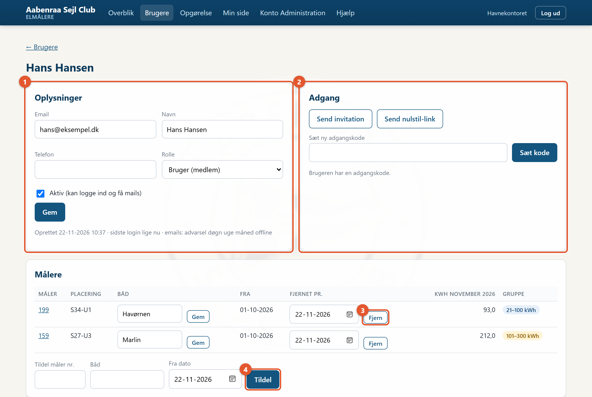
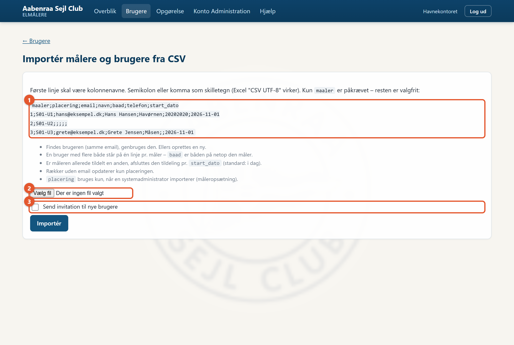
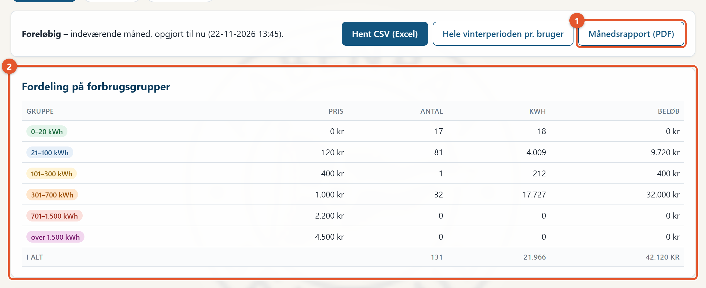
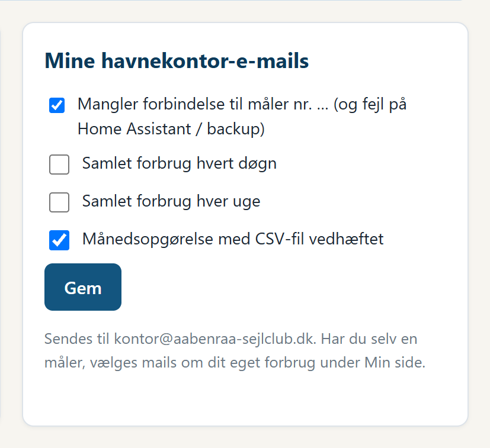

Elmålere
Manual for havnekontoret
Aabenraa Sejl Club
Version november 2026
Indhold
- 1 · Kom godt i gang
- Hvad er elmålersystemet?
- De tre slags brugere
- Log ind
- Glemt adgangskode
- Læg siden på telefonens hjemmeskærm
- Hjælp og manualer
- 2 · Havnekontorets opgaver
- Overblik over alle målere
- Tildel en måler til et medlem
- Fjern en måler fra et medlem
- Brugere
- Importér fra regneark
- Målere der ikke er i brug
- Månedsopgørelse og afregning
- Mails til havnekontoret
- Årshjul
- 3 · Månedsrapporten til bestyrelsen
- 4 · Spørgsmål og svar
1
Kom godt i gang
Hvad er elmålersystemet?
Havnens elstandere har en lille trådløs elmåler på hvert udtag. Målerne sender hele tiden deres målinger til klubbens
server, og elmålersystemet gemmer forbruget hvert kvarter. Du kan derfor altid se, hvor meget strøm din båd bruger – også
lige nu – på din telefon eller computer.
Systemet bruges også til afregningen af vinterstrøm (november–marts): hver måned placeres båden i en forbrugsgruppe ud fra
månedens forbrug, og det samlede beløb opkræves ved standerhejsning.
De tre slags brugere
| Bruger | Kan |
|---|
bruger
Medlem med båd | Se eget forbrug på Min side, vælge e-mails, bestille forbrugsrapport, skifte e-mail og adgangskode. |
kontor
Havnekontoret | Alt det, et medlem kan, plus: se alle målere, oprette og ændre brugere, tildele og fjerne målere, lave månedsopgørelser og hente afregning. |
admin
Systemadministrator | Alt det, havnekontoret kan, plus menuen System: status, systemlog, måleropsætning, database og backup, indstillinger (forbrugsgrupper, priser, mails) og test. |
Hvilke menupunkter du ser øverst på siden, afhænger af din rolle. Et medlem ser kun Min side og Konto Administration.
Medlemmernes Min sideSom havnekontor har du også din egen Min side. Hvordan medlemmerne bruger
Min side (grafer, e-mails, forbrugsrapport), står i Manual for medlemmer – nyttig, når et medlem ringer og spørger.
Log ind

Du får en e-mail med en invitation, når havnekontoret har oprettet dig. Klik på linket og vælg en adgangskode.
Herefter logger du ind på klubbens elmåler-adresse.
- E-mail – din e-mail er også dit brugernavn.
- Adgangskode – mindst 8 tegn.
- Log ind. Du forbliver logget ind i 30 dage på samme enhed.
- Glemt adgangskode? – se næste afsnit.
SikkerhedEfter 10 forkerte forsøg spærres der i 15 minutter. Skifter du adgangskode, bliver du logget ud på alle andre enheder.
Glemt adgangskode

- Skriv din e-mail.
- Tryk Send link. Du får en e-mail med et link, der virker i 24 timer, hvor du vælger en ny adgangskode.
Kommer der ingen e-mail, så tjek spam-mappen – eller bed havnekontoret sende et nyt link.
Læg siden på telefonens hjemmeskærm
Så åbner elmålerne som en app med klubbens logo:
- iPhone/iPad (Safari): åbn siden → tryk på del-knappen ⬆ → Føj til hjemmeskærm.
- Android (Chrome): åbn siden → menuen ⋮ → Føj til startskærm.
Hjælp og manualer
Under Hjælp i menuen ligger manualer og quickguides som PDF – både havnekontorets og medlemmernes, så du kan sende
eller printe medlemmernes quickguide til nye medlemmer. Medlemmerne ser kun deres egne.
2
Havnekontorets opgaverFor brugere med rollen kontor eller admin
Overblik over alle målere

- Menuen: Overblik, Brugere, Opgørelse – og dine egne sider (Min side, Konto Administration).
- Nøgletal: samlet effekt lige nu, forbrug i dag og i måneden, målere online/offline og antal tildelte målere.
- Graf over alle målere – virker som medlemmernes graf (døgn kl. 00–24, uge, måned, vinter; bladr og tryk på søjlerne).

- Søg på målernummer, placering, navn eller båd.
- Klik på et målernummer for at åbne måleren (tildeling, historik og aflæsninger). Måler-siden viser også effekt, strøm (A), spænding (V) og frekvens (Hz).
Tabellen viser for hver måler bl.a. effekt (W), strøm (A) og spænding (V). En måler tæt på 16 A er tæt på at slå sikringen i standeren.
Meget lav spænding (under ca. 207 V) kan betyde en dårlig forbindelse i standeren – giv systemadministratoren besked.
Tildel en måler til et medlem

- Eksisterende bruger: vælg medlemmet på listen …
- … eller opret et nyt medlem direkte med e-mail og navn.
- Startdato – forbruget tælles fra kl. 00:00 denne dag.
- Tryk Tildel måler. Er måleren allerede tildelt en anden, afsluttes den tildeling automatisk pr. samme dato.
- Fjern fra bruger pr. en dato (se næste afsnit).
- Båd – navnet på båden kan rettes på hver tildeling. Båden følger med i opgørelser og afregning.
Et medlem med flere bådeTildel blot én måler pr. båd til samme medlem, og skriv bådens navn ved hver tildeling. Hver båd afregnes for sig.
Fjern en måler fra et medlem
Når en båd forlader havnen eller skifter plads, fjernes måleren fra medlemmet pr. en dato (fx den dag båden sejlede).
Tildelingen afsluttes, men historikken og tidligere opgørelser bevares, og måleren bliver ledig til næste båd.
- På målerens side: Fjern fra bruger i historiktabellen (billedet ovenfor, ⑤).
- På medlemmets side: Fjern ud for måleren.
- Mange på én gang: Målere der ikke er i brug (se nedenfor).
Slet tildelingSystemadministratoren kan slette en tildeling helt. Det må kun bruges, hvis den er oprettet ved en fejl – ellers forsvinder forbruget fra opgørelserne. Brug altid Fjern fra bruger.
Brugere

- Importér fra CSV – mange medlemmer og målere på én gang fra et regneark.
- Målere der ikke er i brug – find og frigiv tildelte målere uden forbrug.
- Opret bruger – e-mail, navn, telefon og evt. måler og båd med det samme. Sæt flueben ved Send invitation, så medlemmet selv vælger adgangskode.
- Søg på navn, e-mail, båd eller målernummer. Klik på et navn for at åbne medlemmet.

- Oplysninger: e-mail, navn, telefon, rolle og om kontoen er aktiv. En inaktiv bruger kan ikke logge ind og får ingen e-mails.
- Adgang: send invitation eller link til ny adgangskode – eller sæt en adgangskode direkte.
- Fjern en måler fra medlemmet pr. en dato.
- Tildel en måler mere (fx til båd nr. 2).
RollerHavnekontoret kan give rollerne bruger og kontor. Kun en systemadministrator kan give rollen admin, og havnekontoret kan ikke ændre en systemadministrators konto.
Importér fra regneark

- Format: første linje er kolonnenavne. Kun
maaler er påkrævet. Gem fra Excel som CSV UTF-8.
- Vælg filen.
- Sæt flueben, hvis nye medlemmer skal have en invitation på e-mail.
Målere der ikke er i brug

- Antal dage uden forbrug …
- … og grænse i kWh. Listen viser tildelte målere, der har brugt mindre end grænsen i perioden.
- Vælg alle – eller sæt flueben ved de enkelte målere.
- Fjern valgte målere fra brugerne pr. den valgte dato. Historikken bevares.
Månedsopgørelse og afregning

- Vælg måned.
- Hent CSV (Excel) – én linje pr. måler og båd med kWh, gruppe og pris.
- Hele vinterperioden pr. bruger – samlet opkrævning for november–marts pr. medlem og båd. Det er den, der bruges ved standerhejsning.
- Genberegn (eller Lås måned). Måneden låses automatisk den 1. kl. 00:20. Er der rettet noget bagefter, fx en tildeling, genberegnes den her.
- Søg i opgørelsens rækker – én pr. måler og båd.

- Månedsrapport (PDF) – den rapport, bestyrelsen får (se kapitel 3). Systemadministratoren har også knappen Send til bestyrelsen. Knapperne findes kun for afregningsmånederne november–marts.
- Fordeling på forbrugsgrupper med antal både og beløb. Indeværende måned står som foreløbig.
Forbrug uden tildelt brugerStår der rækker med (ikke tildelt), har en måler haft forbrug uden en båd. Tildel måleren pr. den rigtige startdato og genberegn måneden – ellers kan forbruget ikke opkræves.
Mails til havnekontoret

Under Konto Administration vælger hver havnekontor-bruger sine egne mails: målere uden forbindelse
(og fejl på Home Assistant/backup), samlet forbrug pr. døgn og uge samt månedsopgørelsen med CSV-fil.
Årshjul
| Hvornår | Hvad sker der | Hvem |
|---|
| Hver nat kl. 03 | Backup af databasen (og kopi til OneDrive) | Automatisk |
| Hver morgen kl. 06 | Daglige e-mails; mandag også ugentlige | Automatisk |
| Den 1. kl. 00:20 | Forrige måned låses | Automatisk |
| Den 1. kl. 06 | Månedsopgørelser til medlemmer og havnekontor; nov–mar også PDF-rapport til bestyrelsen | Automatisk |
| Oktober | Tjek at alle vinterliggere har den rigtige måler og båd. Ryd op i Målere der ikke er i brug. | Havnekontoret |
| Hver måned i vinteren | Se månedsopgørelsen igennem for (ikke tildelt)-rækker | Havnekontoret |
| April | Hent Hele vinterperioden pr. bruger til opkrævning ved standerhejsning | Havnekontoret / kasserer |
3
Månedsrapporten til bestyrelsen
Den 1. i hver måned fra december til april får bestyrelsen automatisk en PDF-rapport for den afsluttede vintermåned, sendt til
bestyrelse@aabenraa-sejlclub.dk. Den fulde opgørelse pr. båd er vedhæftet som CSV-fil (Excel).
Eksempel med opdigtede tal.
Side 1 – økonomi og forbrug
- Nøgletal: samlet forbrug (op/ned i forhold til måneden før), beløb til opkrævning, antal afregnede både og gennemsnit pr. båd.
- Forbrugsgrupper: antal både, andel, kWh og beløb pr. gruppe.
- Forbrug pr. dag for alle målere med gennemsnitslinje.
- Vintersæsonen indtil nu: kWh og opkrævning pr. måned og i alt.
Side 2 – detaljer og drift
- De 10 største forbrug med båd og medlem.
- Drift og datakvalitet: målere online, hvor mange målinger der er modtaget, offline-hændelser, forbindelse til Home Assistant, backup, nye og afsluttede tildelinger, ledige målere.
- Opmærksomhedspunkter: forbrug uden tildelt bruger (kan ikke opkræves), tildelte målere uden forbrug, manglende backup og sæsonafslutning.
Rapporten kan også hentes når som helst under Opgørelse → Månedsrapport (PDF) af havnekontoret.
4
Spørgsmål og svar
Et medlem kan ikke logge ind.
Åbn medlemmet under Brugere. Tjek at e-mailen er rigtig, og at kontoen er aktiv. Tryk Send nulstil-link – eller sæt en adgangskode direkte og giv den videre.
Et medlem kan ikke se sin båd.
Måleren er ikke tildelt, eller tildelingen er afsluttet. Tildel måleren pr. den rigtige startdato.
Der står "(ikke tildelt)" i opgørelsen.
En måler har haft forbrug uden en båd. Tildel måleren pr. den dato, båden kom, og tryk Genberegn på opgørelsen.
En båd har skiftet plads midt i måneden.
Tildel den nye måler fra den dag, båden flyttede, og fjern den gamle pr. samme dato. Begge målere kommer med i månedens opgørelse for båden.
Mange målere er offline på én gang.
Det skyldes typisk et strømsvigt på broen eller en fejl i forbindelsen til Home Assistant/Zigbee. Kontakt systemadministratoren.
Priser, forbrugsgrupper eller placering skal ændres.
Det gøres af systemadministratoren.